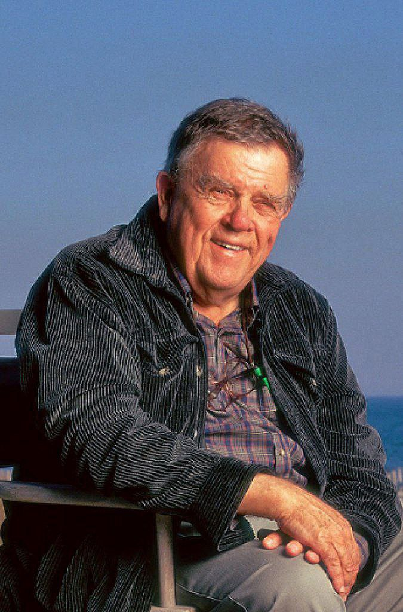

Майкл Кітон (Michael Keaton) - Брюс Вейн/Бетмен

Джек Ніколсон (Jack Nicholson) - Джек Нейпір/Джокер

Кім Бейсінгер (Kim Basinger) - Вікі Вейл

Роберт Вул (Robert Wuhl) - Александер Нокс

Пет Хінгл (Pat Hingle) - Комісар Джеймс Гордон
Біллі Ді Вільямс (Billy Dee Williams) - Гарві Дент

Майкл Гоф (Michael Gough) - Альфред Пенніворт

Джек Пеланс (Jack Palance) - Карл Ґріссом

Джеррі Голл (Jerry Hall) - Алісія Гант

Вільям Гуткінс (William Hootkins) - Лейтенант Макс Екхарт